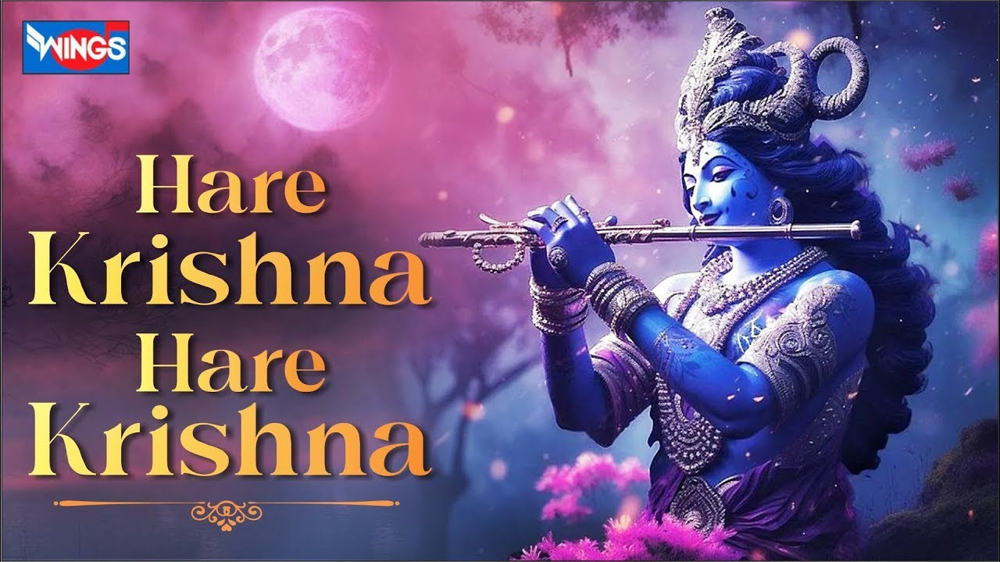

<div class="flex-section">
    <div class="container">
        <div class="row">
          <div class="col-md-2 col-lg-2">
            <ul>
                <li></li>
                <li></li>
                <li></li>
            </ul>
              
          </div>
          <div class="col-md-8  col-lg-8">

            <!-- <div>
                <header>
                    <h1>Sri Krishna Janmastami: Celebrating the Birth of Lord Krishna</h1>
                </header>
                
                <section class="introduction">
                    <h2>What is Janmastami?</h2>
                    
                    <p>Sri Krishna Janmastami, also known as Krishna Janmashtami, is a major Hindu festival celebrating the birth of Lord Krishna, the eighth avatar of Vishnu. It is observed on the 8th day of the dark fortnight in the month of Bhadrapada, which usually falls in August or September.</p>
                    <p>ஸ்ரீ கிருஷ்ண ஜென்மாஷ்டமி, கிருஷ்ண ஜென்மாஷ்டமி என்றும் அழைக்கப்படுகிறது, இது விஷ்ணுவின் எட்டாவது அவதாரமான கிருஷ்ணரின் பிறப்பைக் கொண்டாடும் ஒரு முக்கிய இந்து பண்டிகையாகும். இது வழக்கமாக ஆகஸ்ட் அல்லது செப்டம்பரில் வரும் பாத்ரபதா மாதத்தில் இருண்ட பதினைந்து நாட்களில் 8 வது நாளில் அனுசரிக்கப்படுகிறது.</p>
                </section>
                
                <section class="significance">
                    <h2>Significance of Janmastami</h2>
                    <p>Janmastami is a joyous occasion that marks the arrival of Lord Krishna on Earth to restore dharma and defeat evil forces. The festival emphasizes the values of righteousness, love, and devotion as exemplified by Krishna’s life and teachings.</p>
                    <ul>
                        <li><strong>Spiritual Significance:</strong> It represents the triumph of good over evil.</li>
                        <li><strong>Cultural Importance:</strong> It strengthens communal bonds and promotes spiritual practices.</li>
                        <li><strong>Teachings of Krishna:</strong> The festival reminds devotees of Krishna's teachings in the Bhagavad Gita.</li>
                    </ul>
                </section>
                
                <section class="celebrations">
                    <h2>How Janmastami is Celebrated</h2>
                    <p>The celebration of Janmastami involves various religious and cultural practices, including:</p>
                    <ol>
                        <li>Decorating homes and temples with flowers and lights.</li>
                        <li>Performing midnight prayers and kirtans to celebrate Krishna’s birth.</li>
                        <li>Fasting and engaging in devotional singing and dancing.</li>
                        <li>Enacting scenes from Krishna’s life, including his childhood exploits and divine miracles.</li>
                    </ol>
                </section>
                
                <footer>
                    <p>To learn more about Hindu festivals and Lord Krishna's life, visit <a href="https://www.bhagavad-gita.org" target="_blank">Bhagavad Gita</a>.</p>
                </footer>
            </div> -->

            <div>
               <p class="bg-orange-300 bg-dark fs-3 text-white text-center"> ஹரே கிருஷ்ணா பக்தர்கள் அனைவருக்கும் அன்பான வணக்கம்! ஜெயசீல பிரபு பாதா!  </p>

               <p>

ஸ்ரீமத் பகவத் கீதை இரண்டாம் அத்தியாயம்.  இந்த அத்தியாயத்தில் பகவான் ஸ்ரீ கிருஷ்ணர் குழப்பத்தில் இருக்கின்ற  அர்ஜுனருக்கு ஆத்மாவை பற்றிய விஞ்ஞானத்தை தெளிவாக போதிக்கின்றார். </p>
 அவர் அர்ஜுனனுக்கு மட்டுமல்ல அர்ஜுனர் மூலமாக நம் அனைவருக்கும் ஆத்மாவை பற்றிய தத்துவத்தை வெளிப்படுத்தி இருக்கிறார். மேலும் ஆத்மாவை பற்றி தெரிந்து கொள்வதால் என்னென்ன பயன்கள் என்பதையும் தெளிவாக குறிப்பிட்டு இருக்கிறார். 

மேலும் ஒருவர் தன்னுடைய தர்மத்தை அல்லது கடமையை எவ்வாறு செயல்படுத்த வேண்டும் என்பதையும் பகவான் ஸ்ரீ கிருஷ்ணரிடம் சரண் அடைந்து எவ்வாறு செயல்படுவதனால் என்னென்ன பயன் என்பதையும் இந்த அத்தியாயத்தில் பகவான் குறிப்பிடுகிறார். 

மனதை எவ்வாறு கட்டுப்படுத்த வேண்டும் என்பது சம்பந்தமான விஷயங்களையும் கொடுத்திருக்கின்றார். புலன்களை கட்டுப்படுத்த முயற்சிக்கும் போது என்னென்ன தடைகள் எல்லாம் வரும் என்பதையும்  அதை எவ்வாறு வெற்றி கொள்வது என்பதையும் இந்த அத்தியாயத்தில் நீங்கள் காணலாம்.

ஒரு நபரை நரகத்தின் பாதைக்கு கொண்டு செல்லும் மூன்று விதமான எதிரிகளை பற்றி இந்த அத்தியாயத்தில் நீங்கள் காணலாம். மேலும் அதில் இருந்து எவ்வாறு தப்பிப்பது என்பதை பற்றியும் இந்த அத்தியாயத்தில் நீங்கள் தெரிந்து கொள்ளலாம்.  

ஆகவே பக்தர்கள் இந்த இரண்டாம் அத்தியாயத்தை ஆரம்பத்தில் இருந்து கடைசி வரைக்கும் கேளுங்கள்.  ஒரேடியாக தொடர்ந்து கேட்க முடியவில்லை என்றால் இப்போது கொஞ்சம் வேறு எப்போது நேரம் கிடைகின்றதோ அப்போது கொஞ்சம் கேளுங்கள். 
உங்களுடைய வசதிக்காக விளம்பரங்களை இந்த  வீடியோவில் நிறுத்தி உள்ளோம். ஏற்கனவே தினந்தோறும் ஒவ்வொரு சுலோகமாக வாட்ஸப்பில் அனுப்பி கொண்டிருக்கின்றோம்.  இப்போது ஒட்டுமொத்தமாக இதைக் கேட்கும் பொழுது பகவத் கீதை இரண்டாம் அத்தியாயத்தை ஸ்லோகம் மற்றும் அதனுடைய அர்த்தத்தோடு உங்களால் மனதில் பதிய வைத்துக் கொள்ள முடியும்.  ஒவ்வொரு சுலோகமும் தனிப்பட்ட முறையில் தினம் ஒரு சுலோகமாக  உங்களுக்கு நானே நேரடியாக அனுப்ப வேண்டும் என்றால் இந்த வீடியோவில் தெரியும் இந்த நம்பருக்கு ஒரு வாட்ஸ்அப் மெசேஜ் அனுப்பி எனக்கு பகவத் கீதை அனுப்புங்கள் என்று நீங்கள் கூறினால் உங்களுக்கு தனிப்பட்ட முறையில் நானே அனுப்பி வைக்கிறேன்.  இப்போது பகவத் கீதை இரண்டாம் அத்தியாயத்தை சுலோகம் மற்றும் அதனுடைய அர்த்தத்தோடு கேளுங்கள். இதை வீடியோ வாயிலாக கொடுத்ததனால் நீங்கள் அதை படிக்கவும் முடியும் அது தொடர்பான படங்களை கொடுத்துள்ளதால் அதன் அர்த்தத்தையும் நீங்கள் புரிந்து கொள்ள முடியும்.  எப்போதெல்லாம் நேரம் கிடைக்கும் அப்போதெல்லாம் கேட்டுக் கொண்டே இருங்கள்.  இதை தினமும் கேட்டீர்கள் என்றால் பகவத் கீதை இரண்டாம் அத்தியாயத்தின் ஸ்லோகமும் அதனுடைய அர்த்தமும் உங்கள் மனதில் தெளிவாக பதிந்துவிடும்.  ஹரே கிருஷ்ணா.  ஜெயஸ்ரீல பிரபு பாதா!! 

            </div>
          </div>
          <div class="col-md-2 col-lg-2">


          </div>
        </div>
      </div>
   
  
</div>